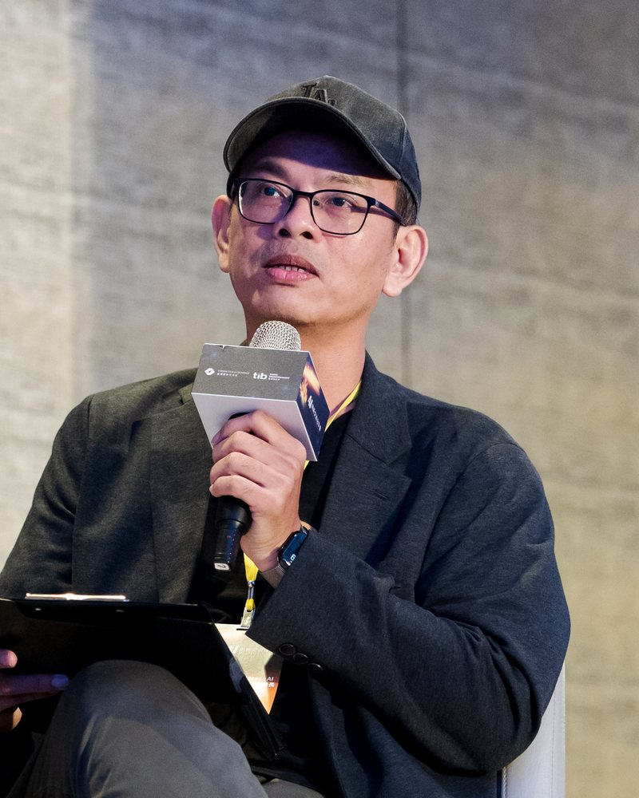
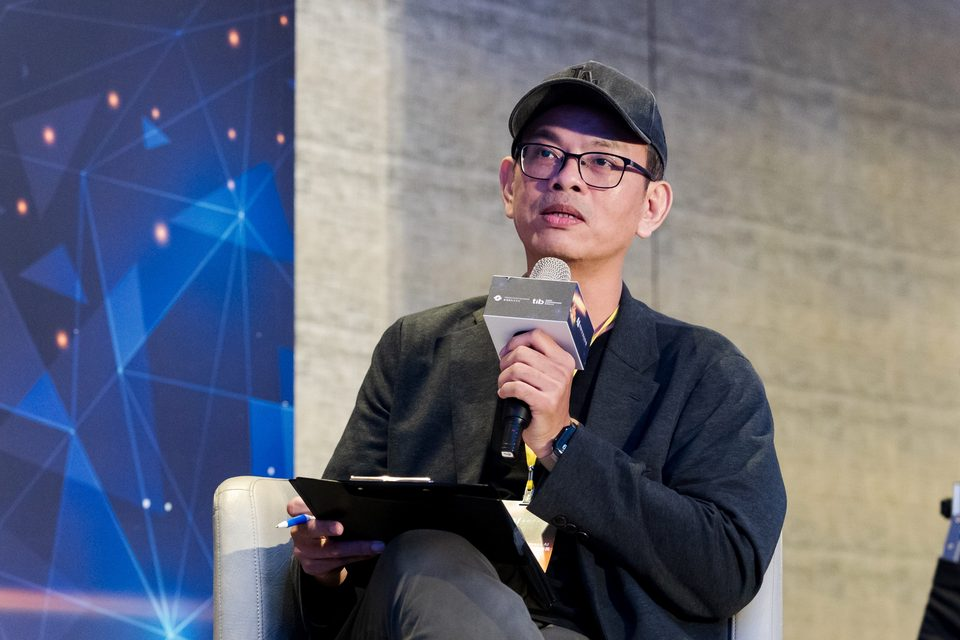
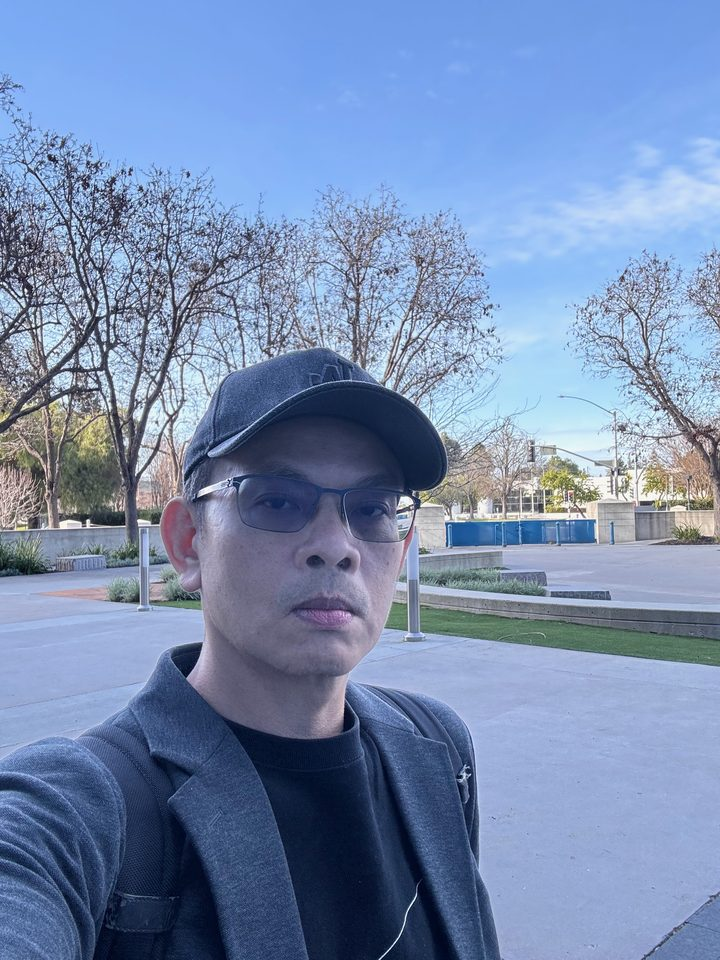
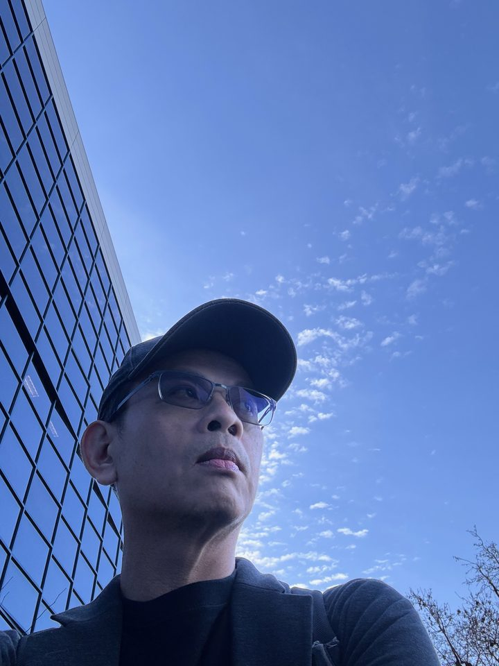

IrisGo.AI 共同創辦人暨營運長Co-founder & COO, IrisGo.AI
連續創業三十年，從 1994 年的校園 BBS 一路走到 AI PC。Thirty years of starting things, from a 1994 campus bulletin board to the AI PC.

主辦單位可以直接複製使用，不需要另外詢問。依版面選一個長度。Organisers are welcome to copy these as they are. Pick the length that fits your layout.
朱宜振 Lman Chu，IrisGo.AI 共同創辦人暨營運長。1994 年在成大創辦電腦網路愛好社 CCNS，之後在硬體產業擔任產品經理十五年，陸續共同創辦 BiiLabs 與 Tallgeese AI。2024 年共同創辦 IrisGo，打造讓電腦替人工作的 AI PC 系統層，種子輪由吳恩達的 AI Fund 領投。
Lman Chu is Co-founder and COO of IrisGo.AI. In 1994 he founded the Computer Network Club (CCNS) at National Cheng Kung University, then spent fifteen years as a hardware product manager before co-founding BiiLabs and Tallgeese AI. In 2024 he co-founded IrisGo, which builds the system layer of the AI PC. Its seed round was led by Andrew Ng's AI Fund.
朱宜振 Lman Chu，IrisGo.AI 共同創辦人暨營運長，台灣第一代網路人。
1994 年，他在成大受學長與眾人之託，創辦電腦網路愛好社 CCNS 並擔任創社社長，將夢之大地 BBS 移入 CCNS 維護，後來成長為台灣前三大的 BBS 站。
進入業界後，他在凌華科技、Kontron Asia 等公司擔任產品經理超過十五年，負責工業電腦與嵌入式產品，經手的產品曾獲台灣精品獎與 Computex 台灣最佳外銷資訊產品獎。2014 年成立南星創速器（SSX）投入新創育成；2017 年共同創辦 BiiLabs，用分散式帳本解決物聯網的信任問題；2023 年共同創辦 Tallgeese AI，為企業提供隱私優先的 AI 方案。
2024 年，他以 Founder in Residence 身分在吳恩達的 AI Fund 花了半年驗證題目，之後共同創辦 IrisGo.AI。IrisGo 打造 AI PC 的系統層：使用者只要示範一次工作流程，它就能學會，下次自動完成。IrisGo 種子輪由 AI Fund 領投，並與 Intel、Acer 等 AI PC 品牌合作。
Lman Chu is Co-founder and COO of IrisGo.AI, and one of Taiwan's first generation of internet builders.
In 1994, he founded the Computer Network Club (CCNS) at National Cheng Kung University and brought the DreamLand BBS under its care. It grew into one of Taiwan's three largest bulletin board systems.
He then spent more than fifteen years as a product manager at ADLINK, Kontron Asia and other hardware companies, working on industrial and embedded computing. Products he managed won the Taiwan Excellence Award and a Computex award for Taiwan's best exported IT products. He started the SouthStar Xelerator (SSX) accelerator in 2014, co-founded BiiLabs in 2017 to bring distributed-ledger trust to IoT, and co-founded Tallgeese AI in 2023 to offer privacy-first AI to enterprises.
In 2024, he spent six months validating an idea as a Founder in Residence at Andrew Ng's AI Fund, then co-founded IrisGo.AI. IrisGo builds the system layer of the AI PC: show it a workflow once, and it learns to do the work itself. AI Fund led IrisGo's seed round, and the company works with AI PC brands including Intel and Acer.
Lman Chu is Co-founder and COO of IrisGo.AI. In 1994 he founded the Computer Network Club (CCNS) at National Cheng Kung University, then spent fifteen years as a hardware product manager before co-founding BiiLabs and Tallgeese AI. In 2024 he co-founded IrisGo, which builds the system layer of the AI PC. Its seed round was led by Andrew Ng's AI Fund.
海報與宣傳可直接使用，點「下載原圖」取得高解析度檔。Free to use for posters and promotion. "Download" gets the full-resolution file.



從網路社群、硬體、新創育成，到 AI。Internet communities, hardware, accelerators, then AI.
其他 數位時代創新顧問、專欄作家；MOX 加速器 Mentor。Also Innovation advisor and columnist, Business Next; mentor, MOX accelerator.
可依聽眾調整長度與深度，學生、企業、創業社群都講過。Length and depth adjust to the room: students, companies, founder communities.
演講與合作邀約請來信，也可以透過 LinkedIn 私訊。For talks and collaboration, email me or send a LinkedIn message.
{kind=link}
{kind=link}
{kind=link}